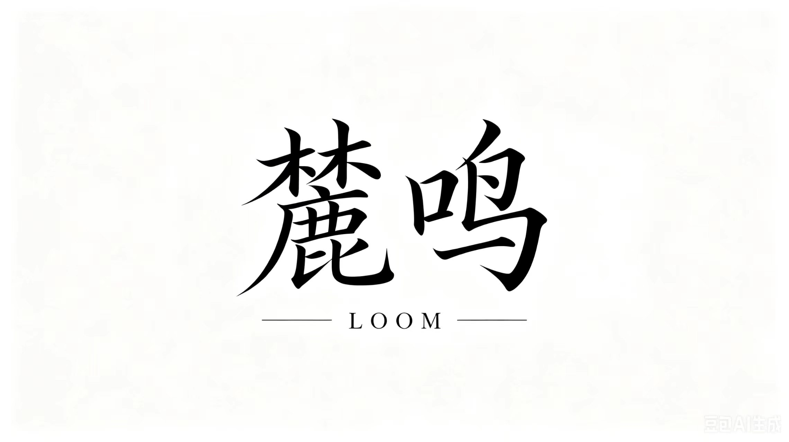

LOOM / LUMING
给你的团队， 上岗一名 会执行的 AI 员工。
从一个重复流程开始： 连接模型、连接手机、发布任务。 回收日志，把工作变成 可执行、可复盘、可复用的任务闭环。
- 试点入口
- 一个真实流程
- 过程证据
- 截图 / 日志 / 状态
- 扩展方式
- 模板复用

AI 员工 · 今日上岗
Human approval stays in the loop
09:41 任务已分发到手机 02
09:42 截图证据已回传
09:44 等待人工确认外发
THE REAL COST
你的团队不是慢，是太多工作还需要人盯着流程。
复制粘贴、跨系统录入、重复回复、手机端发布、截图核对、报表整理。 这些事看起来不难，但最容易吞掉人的耐心和管理注意力。
规则稳定，但没人敢完全放手。
网页、桌面软件、手机 App 来回切。
老板要的是能复盘，不是空口说省时。
EXECUTION LOOP
麓鸣卖的不是按钮，是一条能跑起来的执行闭环。
先从一个稳定流程开始，记录人工基线，再让 AI 员工跑出同一条流程的证据。
把真实流程交进来。
设备状态可观察。
截图、日志、状态。
关键动作不盲发。
下一次更容易复用。
AI Employee File
麓鸣 · 流程执行员
技能
发布任务 / 看日志 / 回传证据
设备
手机矩阵 + 本地控制台
边界
需要确认后才会外发
沉淀
流程模板 / 复盘记录
GO TO MARKET
客户买到的是“上岗陪跑”，不是又一个要自己配置的工具。
挑出第一条值得 AI 员工接手的高频流程。
连接模型、手机、日志，把一个真实流程跑通。
持续管理任务模板、设备状态和过程证据。
BRAND ASSETS
用真正的麓鸣资产撑住高级感。
首页主视觉使用字标和山形声波 icon；产品说明用已存在的麓鸣海报，不用旧界面冒充品牌素材。


BEST FIRST WORKFLOWS
先接手高频、稳定、跨系统的流程。
不需要一开始替代整个部门，先找一条每天都在重复、结果能验证的流程。
素材整理、发布检查、截图留痕。
重复咨询整理、工单跟进、状态回填。
门店信息核对、活动发布、结果巡检。
账号检查、发布流程、数据回收。
手机端回归、截图取证、异常记录。
跨系统录入、审批提醒、报表清理。
WHY IT STICKS